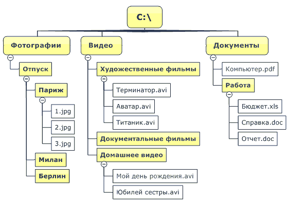
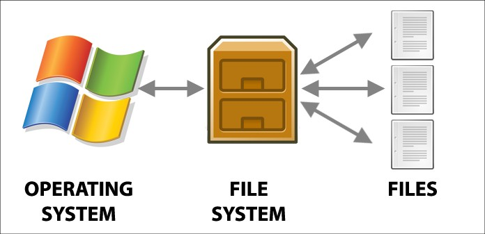

| Тема 1. Файлы и файловая система. | ||
| Назад | ||
|
Файл (англ. File) - именованная область данных на носителе информации. Файлы хранятся в файловой системе - каталоге, определяющим способ организации, хранения и именования данных, а также задающем ограничения на формат и доступ к данным. На сегодняшний день наиболее популярными являются древовидные каталоги (также директории или папки) - файлы, содержащие записи о входящих в них файлах (Рисунок 1).  Рисунок 1 - Пример древовидной организации файловой системы в ОС Windows Файловая система связывает носитель информации с одной стороны и программный интерфейс для доступа к файлам - с другой. Когда прикладная программа обращается к файлу, она не имеет никакого представления о том, каким образом расположена информация в конкретном файле, так же как и на каком физическом типе носителя (CD, жестком диске, магнитной ленте, блоке флеш-памяти или другом) он записан. Все, что знает программа - это имя файла, его размер и атрибуты (получая их от драйвера файловой системы). Именно файловая система устанавливает, где и как будет записан файл на физическом носителе (например, жестком диске) (Рисунок 2).  Рисунок 2 - Файловая система предоставляет интерфейс доступа к файлам для операционной системы 7 Свойства файлаФайл может обладать различным набором свойств в зависимости от файловой системы. В большинстве файловых систем файл имеет следующие свойства:
Имя файла имеет определенные ограничения в зависимости от файловой и операционной системы, в частности, допустимые знаки и длину наименования. Расширение указывается после имени через точку, имея назначение, в основном, для ОС Windows, где определяет приложение для запуска файла. Примечание В ОС Windows по умолчанию расширение файла скрыто от пользователя. Зачастую удобно «видеть» расширение, что можно включить в настройках: https://support.microsoft.com/ru-ru/kb/865219. 8Путь к файлу: абсолютный и относительныйДля того, чтобы найти файл в файловой системе необходимо знать к нему путь - узлы дерева файловой системы, которые нужно пройти, чтобы до него добраться.
В операционных системах UNIX разделительным
знаком при записи пути является Путь может быть:
Примеры путей для ОС Windows и UNIX:
|
||
| Конспект подготовлен Бакулиным А. М. 2022 год. | ||